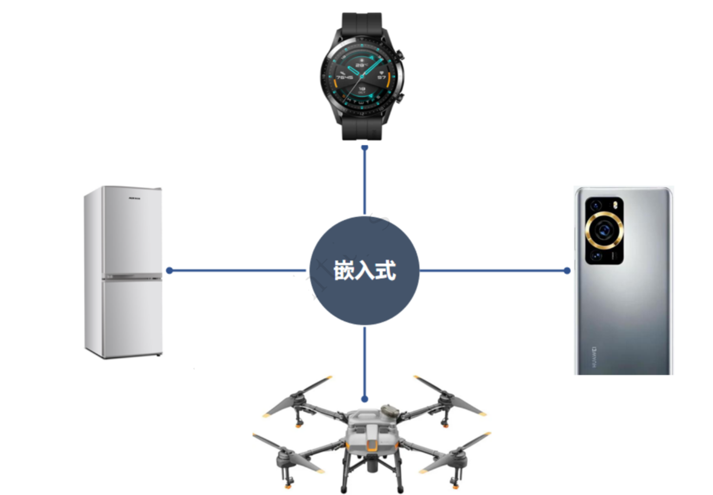
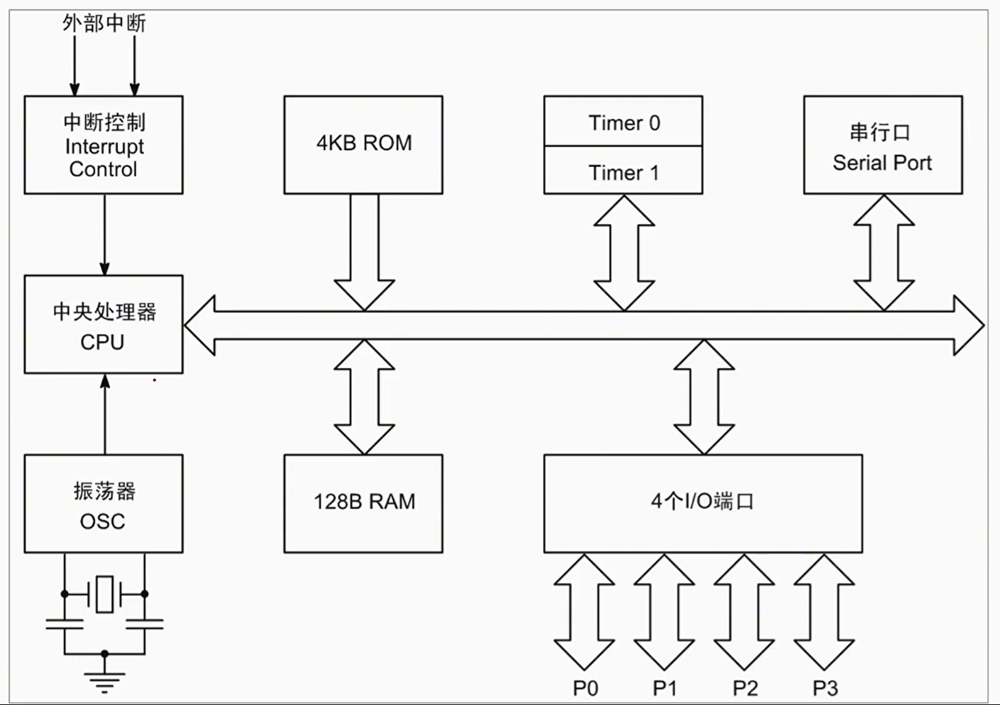
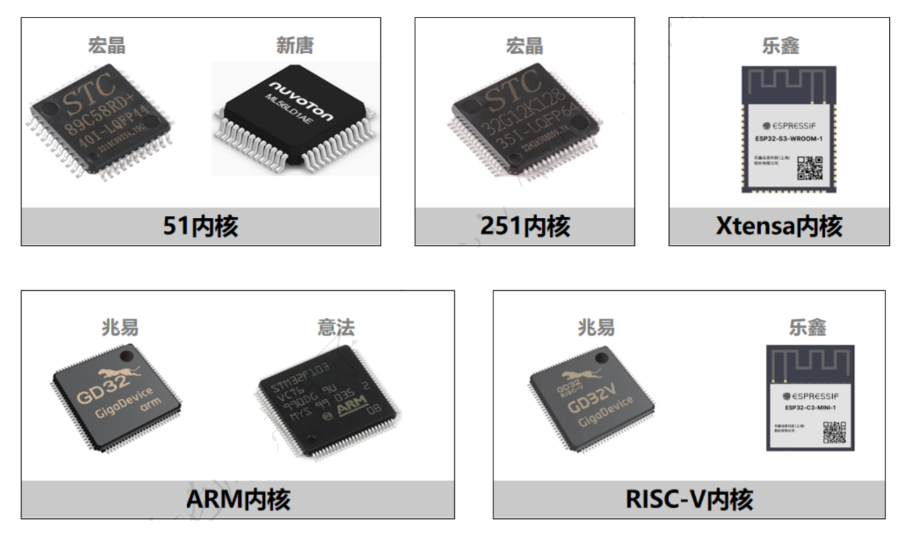

<!DOCTYPE lake>
<p data-lake-id="u21a11889" id="u21a11889"></p><p data-lake-id="ub0961684" id="ub0961684"><span class="lake-fontsize-12" data-lake-id="u2a35825d" id="u2a35825d">单片机（Microcontroller）是一种集成电路芯片，它集成了处理器、存储器、输入/输出接口以及各种功能模块于一身。</span></p><p data-lake-id="ubf02b205" id="ubf02b205"></p><p data-lake-id="uc1557bc8" id="uc1557bc8"><strong><span data-lake-id="u55b03a88" id="u55b03a88">常见的CPU内核</span></strong></p><p data-lake-id="ub5b8db44" id="ub5b8db44"></p><p data-lake-id="uaa666237" id="uaa666237"><span data-lake-id="u219bc752" id="u219bc752">常用国产芯片: </span><a data-lake-id="uc24a7121" href="https://docs.qq.com/sheet/DY251S2x3aWxKUXdD?tab=BB08J2" id="uc24a7121" rel="noopener noreferrer" target="_blank"><span data-lake-id="u348dcdb1" id="u348dcdb1">https://docs.qq.com/sheet/DY251S2x3aWxKUXdD?tab=BB08J2</span></a></p><blockquote data-lake-id="u261fdc01" id="u261fdc01"><p data-lake-id="u1ab609f0" id="u1ab609f0"><span data-lake-id="u985495cf" id="u985495cf">单片机的硬件架构</span></p></blockquote><ol list="uec627434"><li data-lake-id="u514930f1" fid="u89ccb4e6" id="u514930f1"><span class="lake-fontsize-12" data-lake-id="uec534605" id="uec534605">总线：总线是一组导线，连接了单片机中的各个部分，如处理器、存储器和输入/输出接口。它负责在各个部件之间传递信息和数据。常见的总线有地址总线、数据总线和控制总线。</span></li></ol><ul data-lake-indent="1" list="ufd492979"><li data-lake-id="u36de9e44" fid="u8b9b34c8" id="u36de9e44"><span class="lake-fontsize-12" data-lake-id="ue3a7f070" id="ue3a7f070">地址总线：用于传递存储器和外设的地址信息。</span></li><li data-lake-id="u9d0906dd" fid="u8b9b34c8" id="u9d0906dd"><span class="lake-fontsize-12" data-lake-id="u45683504" id="u45683504">数据总线：用于传输实际的数据。</span></li><li data-lake-id="u182fb2e2" fid="u8b9b34c8" id="u182fb2e2"><span class="lake-fontsize-12" data-lake-id="u3c4e8643" id="u3c4e8643">控制总线：用于传递控制信号，如读写操作。</span></li></ul><ol list="uec627434" start="2"><li data-lake-id="ue315c5b1" fid="u89ccb4e6" id="ue315c5b1"><span class="lake-fontsize-12" data-lake-id="u2f0796e6" id="u2f0796e6">总线与外设通信：单片机通过总线与外设进行通信。当处理器需要与外设通信时，它会将外设的地址放在地址总线上，将要传输的数据放在数据总线上，并通过控制总线发送控制信号，以实现对外设的读写操作。</span></li><li data-lake-id="ud4f5087e" fid="u89ccb4e6" id="ud4f5087e"><span class="lake-fontsize-12" data-lake-id="u449292a1" id="u449292a1">GPIO（General Purpose Input/Output，通用输入输出）：GPIO是单片机上的一种通用接口，可用于连接各种外设。GPIO接口可以配置为输入或输出模式，实现单片机与外设之间的数据传输。</span></li><li data-lake-id="u05083569" fid="u89ccb4e6" id="u05083569"><span class="lake-fontsize-12" data-lake-id="u9802a170" id="u9802a170">通信协议：单片机与外设之间通信的方式有很多，通常需要遵循一定的协议。以下是一些常见的通信协议：</span></li></ol><ul list="ue9dd2335"><li data-lake-id="u70937a7b" fid="u01c9284a" id="u70937a7b"><span class="lake-fontsize-12" data-lake-id="ua7dd1229" id="ua7dd1229">UART（Universal Asynchronous Receiver/Transmitter，通用异步收发器）：这是一种异步串行通信协议，用于在单片机与外设之间传输数据。UART通信需要两根线：一根用于发送数据（TX），另一根用于接收数据（RX）。</span></li><li data-lake-id="u97309d68" fid="u01c9284a" id="u97309d68"><span class="lake-fontsize-12" data-lake-id="ue2de395a" id="ue2de395a">SPI（Serial Peripheral Interface，串行外设接口）：SPI是一种同步串行通信协议，使用主从模式进行通信。它需要四根线：时钟线（SCLK）、主设备数据输出线（MOSI）、主设备数据输入线（MISO）和片选线（SS）。</span></li><li data-lake-id="ucb68db38" fid="u01c9284a" id="ucb68db38"><span class="lake-fontsize-12" data-lake-id="u7a4cabe6" id="u7a4cabe6">I2C（Inter-Integrated Circuit，内部集成电路总线）：I2C是一种同步串行通信协议，使用主从模式进行通信。它只需要两根线：串行数据线（SDA）和串行时钟线（SCL）。</span></li></ul><p data-lake-id="u503535d4" id="u503535d4"><br/></p><p data-lake-id="ua63726b0" id="ua63726b0"><br/></p>